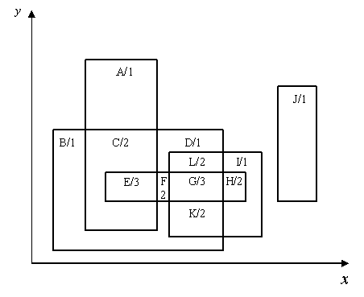
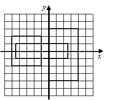

Problem F
Overlapping Areas
Consider a set of rectangles in 2D space as illustrated in the
figure below. Overlapping or not, they define a set of regions with
different shapes (in the example given, there are twelve regions,
identified from A to L). Lets OD (Overlapping
Depth) be the number of rectangles that overlap in each region (in the
figure, OD is the number associated to each region). In this
example, the maximum value of OD is 3 and it appears twice, in
regions E and G.

Problem
Write a program that given a set of rectangles, computes
the total area of the regions with the maximum value
ODMX (this corresponds to the sum of the areas of
region E and region G shown in the figure). In order
to avoid numerical problems, it is ensured that there are no
coincidences between edges of different rectangles.
Input
The first input line contains the number NR (integer format)
of rectangles (0 <= NR <= 100). Each of the following
NR lines contain the coordinates of two opposed vertices of a
rectangle, in the sequence x1 y1 x2 y2, separated by single
spaces. In this case, no order is assumed for point 1 and point 2 and
numbers may be written in integer or in decimal format. The separator
between values is the space character.
Output
One decimal number, rounded to two decimal digits, representing the
computed area.
Sample Input
The graphical representation of the sample input is as follows:

3 -5.00 -2.00 -1.0 2.0 2.5 -1 -4.5 1.0 4 3 0 -4
12.00